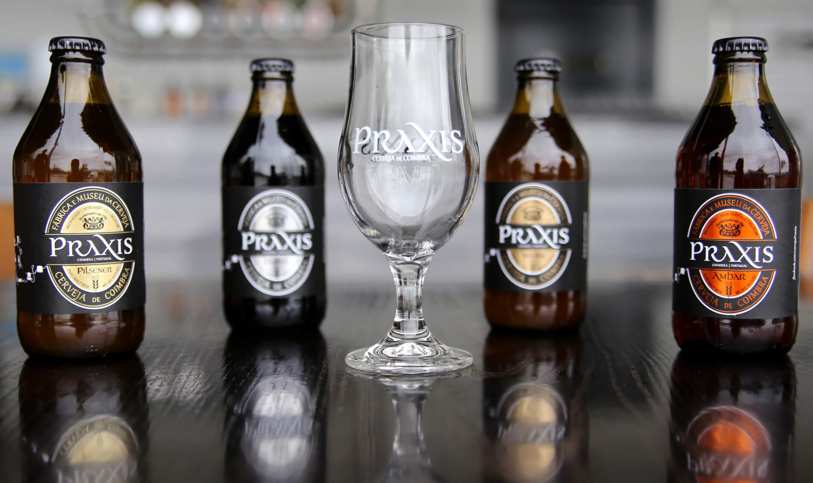

Cerveja Emblemática de Coimbra
Our Master Brewer entered his bubble to brew
The episode where our Master Brewer entered his bubble to brew a very effervescent and slightly tart festive beer to savor like champagne.
January is often seen as the longest month of the year, with little to look forward to. Not at BrewDog. We share the opinion of one of our favourite breweries that craft beer is there to be enjoyed; to spark something. And if that spark arrives in the penultimate week of January, then all the better. Get ready for a doldrum-breaking blast of energy from the unmissable Omnipollo. We are showcasing Sweden’s finest in each and every Bar on Thursday January 23rd… …and in style. We are rocking Omnipollo’s soft-serves in every bar too! If you know craft beer then Omnipollo need little introduction; the Swedish brewery were founded a decade ago by brewer Henok Fentie and artist Karl Grandin, and together they have unleashed wave after wave of unique, flavour-forward unmissable beer ever since. We love Omnipollo because they are truly innovative, they embrace collaboration and they make people look at beer in an entirely new way. And on Thursday 23rd, you’ll be able to find out more about exactly what they mean.
The episode where our Master Brewer entered his bubble to brew a very effervescent and slightly tart festive beer to savor like champagne.
January is often seen as the longest month of the year, with little to look forward to. Not at BrewDog. We share the opinion of one of our favourite breweries that craft beer is there to be enjoyed; to spark something. And if that spark arrives in the penultimate week of January, then all the better. Get ready for a doldrum-breaking blast of energy from the unmissable Omnipollo. We are showcasing Sweden’s finest in each and every Bar on Thursday January 23rd… …and in style. We are rocking Omnipollo’s soft-serves in every bar too!
Master Brewer
If you know craft beer then Omnipollo need little introduction; the Swedish brewery were founded a decade ago by brewer Henok Fentie and artist Karl Grandin, and together they have unleashed wave after wave of unique, flavour-forward unmissable beer ever since. We love Omnipollo because they are truly innovative, they embrace collaboration and they make people look at beer in an entirely new way. And on Thursday 23rd, you’ll be able to find out more about exactly what they mean.

If you know craft beer then Omnipollo need little introduction; the Swedish brewery were founded a decade ago by brewer Henok Fentie and artist Karl Grandin, and together they have unleashed wave after wave of unique, flavour-forward unmissable beer ever since. We love Omnipollo because they are truly innovative, they embrace collaboration and they make people look at beer in an entirely new way. And on Thursday 23rd, you’ll be able to find out more about exactly what they mean.